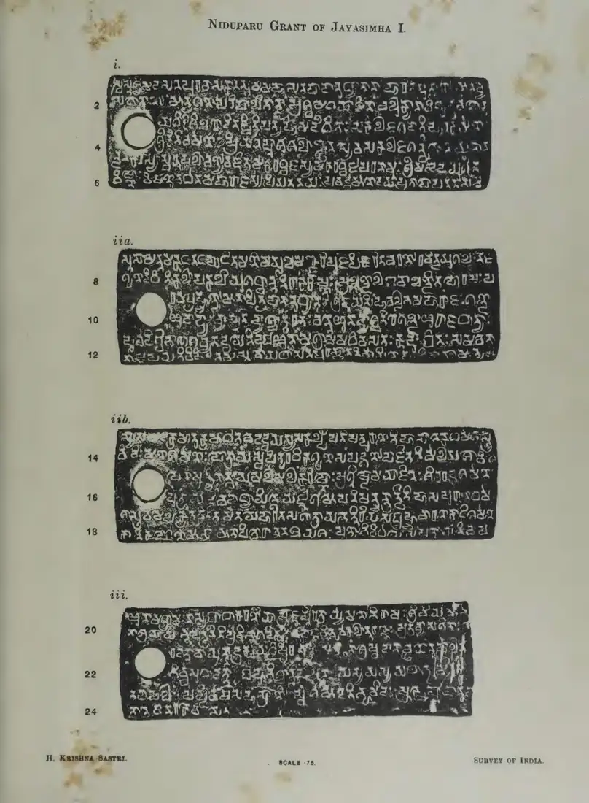
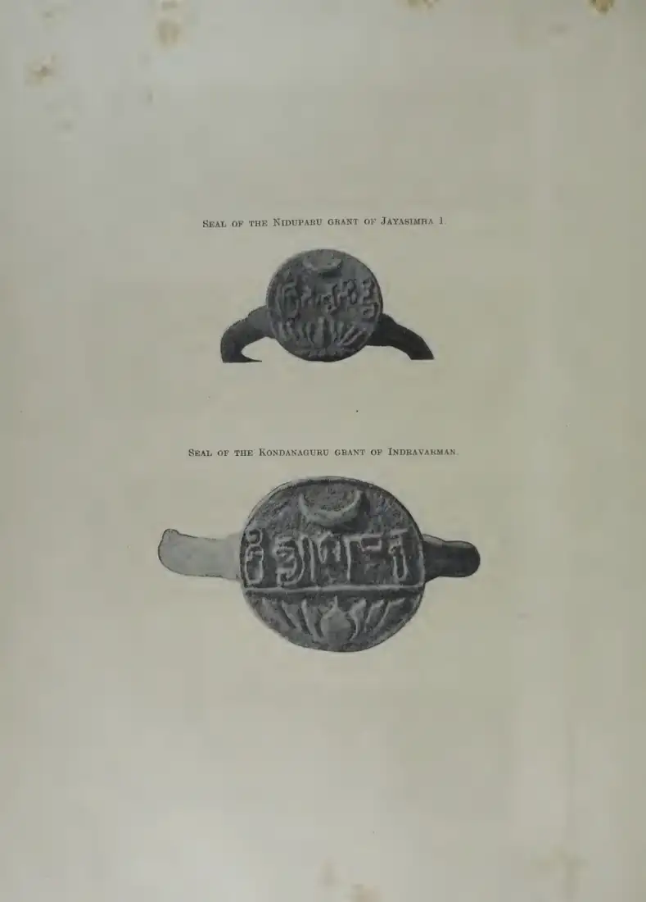

No. 5.—NIDUPARU GRANT OF JAYASIMHA I.
BY PROFESSOR E. HULTZSCH, PH.D.; HALLE (SAALE).
A set of ink-impressions of this inscription was sent to me by Rao Bahadur H. Krishna Sastri, who had received the original plates for examination2 from Mr. M. Ramakrishnakavi, M.A., Oriental Manuscripts Library, Madras. The inscription is engraved on three oblong copper-plates, the second of which bears writing on both sides. The margins of the four inscribed sides are only very slightly raised into rims. The plates measure 2" in height. The two first are 7" in breadth, while the third is cut on the right margin and hence measures only 6 3/2". The plates are strung on a ring which is 2 8/9" in diameter, and which is passed through a hole of about 8" in diameter. The two ends of the ring are fixed in the base of a circular seal of about 1 1/2" in diameter which bears, in relief, the legend Śrī-Sarvvasiddhi, with a crescent at the top and an expanded lotus-flower of nine petals at the bottom. The weight of the plates, with ring and seal, is 70 tolas.
The writing is in a tolerably good state of preservation; but some aksharus, anusvāras, and vowel-marks are indistinct, and at the end of the first five lines of the third plate, two or three letters are lost. The alphabet resembles that of other early Eastern Chalukya grants. A final form of t occurs in -vāsakāt (l. 1) and vasēt (l. 24). The syllable ru is used in the Telugu proper names Gaṇdēru (ll. 9 f. and 10), Vannēru (l. 10), Niḍuparu (l. 18 f.) and Niḍubaru (l. 11).
The language is Sanskrit prose as far as line 19. The last plate contains four Sanskrit verses. Consonants are not doubled after r, except in -ātti- (for -ārtti-, l. 3), pravarddha° (l. 6) -mantrārthi° (for -mantrārtthe°, l. 16), =āryya- (l. 19), °bhir=vvasudhā (l. 22). As the notes on the text will show, the rules of Sandhi are frequently neglected. For -kalāpa (l. 8) the sense requires the instrumental -kalāpēna.
The inscription records the grant of the village of Niḍuperu or Niḍubaru to the learned Brāhmaṇa Kāṭiśarman (read Kōṭiśarman ?) by Jayasimha (I) Vallabha, son of Vishṇuvardhara (I) and grandson of Kīrtivarman (I) of the Chalukya family. Vishṇuvardhana I bore the surname Makaradhvaja, i.e., Cupid, whom he is stated to have surpassed in beauty (l. 5). The donor, Jayasimha I, had the surname Sarvvasiddhi,3 by which he is designated on the seals of his two grants.4
The king's order was issued from Asanapura (l. 1), and the donee's grandfather was an inhabitant of the same town (l. 12).5 The village granted was included in Gaṇdēruvāṭi and
1 [Mr. K. V. S. Aiyar reads in l. 426 mummadi and translates: ' who saw the back of Āhavavalla three times —Ed.]
2 See Ep. Rep. for 1917, App. A., No. 7 and p. 113.
3 See Ind. Ant., Vol. XX, p. 97.
4 See the first paragraph of this article, and Ind. Ant., Vol. XIII, p. 137.
5 The grandfather of the donee of a grant of Vishṇuvardhana II also resided in Asanapura; Ind. Ant., Vol. VII, p. 192.
was situated on the river Vannēru, north of the Vyaghra river, and two gavyūtis east of the royal residence of Gaṇdēru. The district of Gaṇdēguvāti is evidently the same as Kaṇdēruvāđi or Kaṇdravāđi in other inscriptions from the Telugu country.1 Rao Bahadur Krishna Sastri has identified Gaṇdēru, the chief town of this district and the residence of Jayasimha I, with the village of Kantēru in the Guṇṭūr Tāluk of the Guṇṭūr District, and the village granted, Niđuparu or Niđubaru, with the modern Nidamarru 'which is actually about two gavyūtis (i.e., eight miles) to the east of Kantēru.'2 Mr. Sewell informs me that Kantēru is a few miles N. E. of Guṇṭūr near the main road leading to Bezvāda, and that Nidamarru is a few miles N. N. E. of it. He is unable to trace the Vyāghra and Vannēru rivers, and the town of Asanapura.
TEXT.3
First Plate; Second Side.
- 1 Svasti [||*] Śrīmad-Asanapura-vāsakāt svāmi-Mahāsēna-pād-ānudhyātānām Hāriti-putrāṇā[m] Mānavya-
- 2 sugōt[r]āṇām Mātri-gaṇa-paripālitānām4 aśvamēdha-yājinām Chalukyānām vi[ś]uddha-vam[ś]-ōda-
- 3 yagiri-śikhar-ōdita-kshitipaty-ahimadidhitēḥ sakala-jagad-ā[r*]tti-hara-karmaṇa[h]
- 4 Sri-Kirtivarmaṇah priya-naptā śaśalāṇchhanasy=ēva sakala-jagan-ma[n]ō-nayan-āna-
- 5 ndana-karasya sva-rūpa-lāvaṇy-āvajita-Makarathva(dhva)jasya Makaradhvaj-āpara-nāmnah śrīmad-aida[m*]yugīna-
- 6 Vishṇōḥ5 Vishṇuvardhana-mahārājasya6 priya-tanayah pravarddhamān ōdaya-pratāp-ōpanata-sama-
Second Plate; First Side.
- 7 sta-sāmanta-makuṭa-taṭa-ghaṭita-maṇi-mayūkha-maṇjari-punija-pimjarita-charaṇ-āravinda-yugalaḥ(lō) nija-
- 8 guṇa-didhiti-kalāpa7 Kaliyuga-dhvāntam nirākarishṇuh8 Ākhaṇdala iv=ākhaṇdita-paura(ru)shah pa-
- 9 rama-brahmaṇyō mātāpitri-pāt-ānudhyātaḥ9 śrī-Jayasimha-Vallabha-mahārājaḥ(jō) Gaṇdē-
- 10 ṛuvāṭyā[m] Vyāghra-nadyāś-ch=ōttaratah(tō) Vannēru-nadyāś=cha tirē Gaṇdēru-rājadhāṇyāḥ
- 11 pūrva-dig-vibhāgē gavyūta(ti)-dvayē Niđubaru-nāma-grāmam=adhivasataḥ kuđurī(ṭuī)binaḥ samavētā-
- 12 n=ājñāpayati [||*] Viditam=astu vō yath=Āsanapura-sthāna-nivāsinō ghaṭikā-sāmāṇya-
1 See above, Vol. VI, p. 148, and Vol. XII, p. 62.
2 Annual Report on Epigraphy for 1916-17, p. 115. According to Mr. Sewell's Lists, Vol. I, pp. 37 and 39, there is a pair of other villages of the same name (Kaṇtēru and Niđamarru) in the Tanuku and Bhīmavaram Tāluks of the Gōdāvari District. At my request Mr. Sewell has kindly looked up the Tāluk maps in the British Museum, and he quite agrees with Mr. Krishna Sastri's identification, because the village of Kantēru in the Guṇṭūr District 'is a far more important place than the little out-of-the-way village of the same name in the Tanuku Tāluk of the Gōdāvari District,' and because the two villages of Kantēru and Niđamarru in this last district are 'not very close together; and seemingly quite small places.'
3 From the ink-impressions.
4 Read 'tānām=.
5 Read Vishṇōḥ=.
6 As there was no room for the group shṇu of Vishṇu0 at the bottom of the plate, the engraver placed a dash (virāma) above sh and added ny after it;
7 Read-kalāpēna.
8 Read 'rīshṇur=.
9 Read -pād-ānudhyātaḥ.
Plate 1 is bound after this page.
Plate 2 is bound after this page.
Second Plate; Second Side.
13 sya sa-[pa]da-kram-ānukram-ādhita-vēda-dvayasya sa-kalp-ōpanishat-purāp-ētihās-ānēka-dharmaśāstra-
14 Vidah(dō) Maṇ[da]śarmaṇah pautrāya sva-pitur=adhika-guṇa-sampad-gaṇ-ā(ō)pāi ji'a-nirmala-yaśō-viśō-
15 shē[na]1 [ā]tmanō=nvayam=alam=alam'karishṇōh2 agnishṭōma-yājinah Śivarudraśarmaṇa[h]
16 putrāya dvi-v[ē]d-ādhyāyinē yajñāgam ōpanishan-mantrārtth-i(ō)tihāsa-purāṇa-dharma-śāstra-vimalikrita-vina(n!)ta-matayē Hārita-sagōtrāya Taittiriya-sabrahmachāra(ri)pē Kāṭiśarmaṇē
18 Kārtika-purnṇamāsyām mātāpitrōr=ātmanas-cha yaśah-puṇy-ābhivirdhayē3 samprattō=yam Niḍupa-
Third Plate; First Side.
19 ṣu-nāma-grāmah [|*] N=āsya bādhā karaṇiyā [||*] Ājñaptir=atr=āryya-manō-bhirāmuh śri-vīrya-[m]ā[tsa] . . . .
20 nāśrayō=yam4 [|*] bhūpēndra-niti-pravibhāga-dakshah(kshō) [vē]dāṅga-vit=sarva-kal-āntaraṇñah(jñah) [|| 1 ||*] Atrā Vyāsa-gitāh . [||*] [Sva][dattām pa*]-ra-dattām vā yatnād=raksha Yudhis'bhhira [|*] [mahīm mahī][ma*]tām śrēshṭha dānāch=chh[r*]ṣyō=nu[p]āla[nam] [|| 2 || Bahu*]-
22 bhir=vvasudhā [da]ttā bahubhiś=ch=ānu[pāli]tā [|*] yasya yasya yathā(dā) bhūmi . . . [sya] [tasya*]5
23 tadā phalam [|| 3 ||*] Shashṭi[m*] varsha-sahasrāṇi svarga(rgē) mōdati bhūmi-dah [|*] ākshēpta ch=ānu[ma][ntā cha*]
24 tāny=ē[va] narakē vasēt [|| 4 ||*]
ABSTRACT OF CONTENTS.
Hail! From (his) residence in the prosperous Asanapura (l. 1), Jayasimha-Vallabhe-Mahārāja (l. 9),—the dear son of Vishṇuvardhana-Mahārāja' (l. 6) whose other name was Makaradhvaja (l. 5), and the dear grandson of Kīrtivarman (l. 4) of the family of the Chalukyas (l. 2),—commands (as follows) the assembled ryots inhabiting the village named Niḍubaṣru (which lay in (the district of) Gaṇdēruyāṭi, north of the Vyāghra river and on the bank of the Vannēṣru river, at (a distance of) two gavyūtis on the eastern side of the royal residence (rājadhāni) of Gaṇdēru (ll. 9-12):
'Be it known to you that, on the full-moon (tithi) of Kārttike, (I have) given this village named Niḍupaṣru (l. 18 f.) to Kāṭiśarman of the Hārita gōtra and of the Taittiriya (charaṇa) (l. 17), son of Śivarudraśarman (l. 15), and grandson of Maṇ[da]śarman (l. 14) who resided in the town (sthāna) of Asanapura and was a member of (its) college6 (l. 12).' Maṇ[da]śarman is stated to have 'studied two Vēdas together with their Pada, Krama, and Anukrama' and to have 'known many law-books, together with Kalpa, Upanishad, Purāṇa, and Itihāsa;' Śivarudraśarman, to have performed Agnishṭomas; and Kāṭiśarman, to have 'studied two Vēdas' and to have 'purified and trained his mind by sacrificial lore, Upanishad, the meaning of Mantras, Itihāsa, Purāṇa, and Dharmaśāstra.'
The executor (ājñapti) of this (grant) was . . . . . who knew royal politics, the Vēdāngus, and all arts1 (verse 1, l. 19 f.). The record ends with three verses 'sung by Vyāsa' (l. 20).

